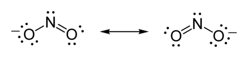

¿Quién Fue Gilbert Newton Lewis?
Gilbert Newton Lewis, nació en 1875 el 23 de Octubre, en la ciudad de Weymouth en Massachusetts. Estudió en Havard, obteniendo su PhD en Química, también
estudió en Alemania y en Philipinas. En 1912, trabajo en la Universidad de California, Bekerley cómo profesor de Química. Donde trabajó
hasta el día de su muerte en 1946 con 70 años. Su muerte fue en el laboratorio de Bekerley, donde estaba trabajando con HCN, se cree que la causa de
su muerte fue un suicidio. En toda su vida fue nominado 41 veces a el premio Nobel, pero ninguna nominación la gano, esto genero una controvercia en su tiempo.
Es conocido por tener varios aportes a la Química, siendo algunos de estos:
-
Enlace Covalente
-
Las Estructuras de puntos, de Lewis
-
Enlace por Valencia, teoria
-
Los Acidos y Bases de Lewis
-
Aportes a Termodinámica Química
-
Entre Otros...
Vamos a tomar una parte del trabajo del Gran Cientifico Gilbert Newton Lewis, vamos a ver Las Estructuras de Puntos, de Lewis. Qué se usan
mucho al momento de hacer diferentes Enlaces Covalentes, que ya vimos en Enlaces Químicos.
Pero antes de meternos a las Estructuras de Lewis, debemos saber que es la Regla del Octeto Electrónico.
Regla del Octeto Electrónico
Es la tendencia de la mayoria de los átomos de completar su nivel energético con 8 electrones para alcanzar una estabilidad. Este es usado principalmente en
los Enlaces Covalentes, ya que para completar su nivel energético debe compartir o allar otro átomo que le preste o comparte los electrones.
Pero el caso es diferentes en dos elementos, el Hidrogeno H y el Helio He, ya que estos solo necesitan 2 electrones para alcanzar su estabilidad.
Aún que el He, ya tiene sus dos electrones. Esto puede permitir que el H pueda hacer diferentes Puentes de Hidrogeno al ser
enlazado con otros elementos químicos.
Ahora sí, teniendo todo lo necesario para poder continuar:
Estructuras de Lewis
Las estructuras de Lewis son una forma de ver cómo los elementos se enlazan entre sí usando el Enlance Covalente. Este en donde dos o más elementos comparten
algunos electrones de valencia para alcanzar la estabilidad de la regla del Octeto Electrónico.
Para poder intercambiar los electrones con los otros elementos, primero debemos seguir los siguientes pasos:
-
Ver cuantos Electrones de Valencia se tiene entre los átomos del Enlace.
-
Miramos cuantos Electrones de Valencia se necesita para que entre los átomos completen el Octeto Electrónico.
-
Con los datos anteriores, calculamos los electrones que estaran en el Enlace o que se van a intercambiar.
-
Dibujamos el Esquema.
-
Se distribuyen los eletrones entre los Elementos.
Para dibujar debemos hacer cada elemento con los electrones de valencia que tengan, escribiendo el simbolo del elemento y al rededor poniendo los electrones.
Hacemos esto con la cantidad de elementos que hayan en el Enlance Covalente. En el punto donde se comparten Electrones de Valencia, se puede simplificar
la unión de dos electrones, dibujando una linea del uno a el otro.
Pero que pasa si en el Esquema tengo más de dos elementos, cómo los organizo? Partiendo de la Electronegatividad de los elementos, podemos ver cual es el
que tiene menor electronegatividad y dejandolo en el centro.
Pero también que pasa si en el Esquema tengo un elemento con una carga negativa o positiva, que hago ahí? Primero debemos agregar o restar el electrón
a los primeros pasos, despues vamos a tomar el elemento con carga negativa y hacer el esquema con el número de electrones que tenga. Y le vamos a
poner el simbolo de carga en la parte de arriba a la derecha, para que se logre entender que ese es un elemento con carga.
Ahora si hay dos elementos y uno de estos tiene una carga, vamos a dibujar dos veces el esquema, pero vamos a poner la carga en el primer elemento y despues
en el segundo esquema, poner la carga en el segundo elemento. O el número necesario de elementos y esquemas, pero entre esquema y esquema tenemos que
hacer unos "brackes" o unas flechas apuntando a los esquemas.
Un ejemplo de todo lo anterior explicado es el esquema de Estructura de Lewis del NO2-

Estructura de Lewis de NO2-